Main Members
Dutch van der Linde
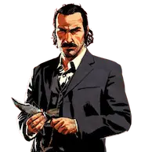
The charismatic and manipulative leader of the gang.
Character Profile
Role: Gang Leader
Age (1899): 44
Death Year: 1911
- Founder of the Van der Linde Gang.
- Believes in freedom and living outside society.
- Becomes increasingly paranoid over time.
Arthur Morgan

The main protagonist. Loyal, but morally conflicted.
Character Profile
Role: Main Protagonist
Age (1899): 36
Death Year: 1899
- Dutch's most trusted member.
- Keeps a journal filled with drawings and thoughts.
- One of the most beloved video game characters ever.
John Marston
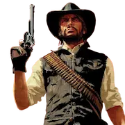
A former outlaw trying to become a family man.
Character Profile
Role: Former Outlaw
Age (1899): 26
Death Year: 1911
- Main protagonist of RDR1.
- Husband of Abigail.
- Father of Jack Marston.
Hosea Matthews
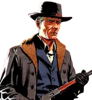
The wise and calm advisor of the gang.
Character Profile
Role: Advisor / Co-Founder
Age (1899): 55
Death Year: 1899
- Co-founded the gang with Dutch.
- Acts as a father figure to Arthur.
Micah Bell
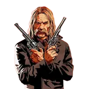
A violent and selfish outlaw who causes chaos.
Character Profile
Role: Outlaw
Age (1899): About 39
Death Year: 1907
- Betrays the gang.
- One of the most hated villains in gaming.
Sadie Adler
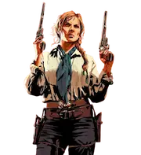
A strong bounty hunter who becomes one of the toughest fighters.
Character Profile
Role: Bounty Hunter
Age (1899): About 25–30
Death Year: Unknown
- Survives the events of RDR2.
- One of the best gunfighters in the gang.
Bill Williamson
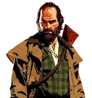
A former soldier turned outlaw. Not very bright but loyal and aggressive.
Character Profile
Role: Outlaw
Age (1899): 33
Death Year: 1911
- Served in the U.S. Army.
- Later forms his own gang.
Javier Escuella
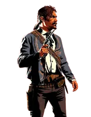
A skilled gunman from Mexico. Loyal to Dutch but becomes more ruthless over time.
Character Profile
Role: Gunslinger
Age (1899): 26
Death Year: 1911 (or unknown)
- Talented guitarist and singer.
- One of Dutch's most loyal followers.
Charles Smith
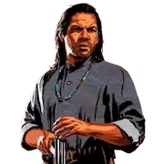
A quiet, honorable hunter and one of the most morally grounded members.
Character Profile
Role: Hunter / Scout
Age (1899): About 27
Death Year: Unknown
- Half Native American, half African American.
- Helps John build Beecher's Hope.
Camp Members
Abigail Roberts
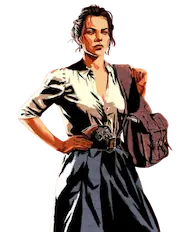
Wants a safer life for her family.
Character Profile
Role: Camp Member
Age (1899): 22
Death Year: 1914
- John’s wife.
- Jack’s mother.
Jack Marston
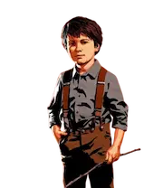
John’s son, growing up in the gang environment.
Character Profile
Role: Camp Member
Age (1899): 4
Death Year: Unknown
- Becomes playable in RDR1.
Uncle
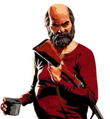
A lazy but sometimes useful camp member.
Character Profile
Role: Camp Member
Age (1899): 50–60
Death Year: 1911
Susan Grimshaw
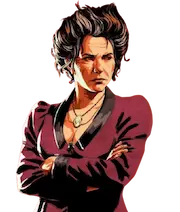
Keeps order in the camp.
Character Profile
Role: Camp Manager
Age (1899): About 48
Death Year: 1899
- Strict camp disciplinarian.
Leopold Strauss
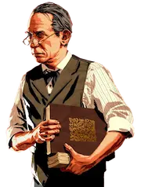
The gang’s loan shark who runs debt collection operations.
Character Profile
Role: Financier
Age (1899): About 50
Death Year: After 1907
Josiah Trelawny
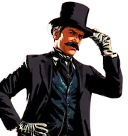
A charming conman who comes and goes frequently.
Character Profile
Role: Conman
Age (1899): 39–45
Death Year: Unknown
Reverend Swanson
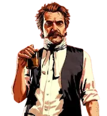
A troubled preacher struggling with addiction and guilt.
Character Profile
Role: Camp Member
Age (1899): About 45
Death Year: Unknown
Other Members
Lenny Summers
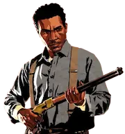
A young and intelligent outlaw.
Character Profile
Role: Outlaw
Age (1899): 19
Death Year: 1899
Sean MacGuire
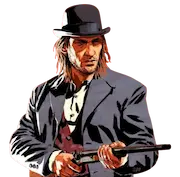
A loud and reckless gunslinger.
Character Profile
Role: Outlaw
Age (1899): 23
Death Year: 1899
Mary-Beth Gaskill
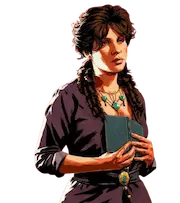
A kind-hearted pickpocket who dreams of writing.
Character Profile
Role: Camp Member
Age (1899): About 21
Death Year: Unknown
Karen Jones
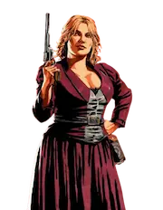
A skilled con artist who struggles with alcoholism.
Character Profile
Role: Camp Member
Age (1899): About 24–28
Death Year: Unknown
- Disappears after gang falls.
Tilly Jackson
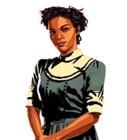
Strong, independent, and level-headed former gang member.
Character Profile
Role: Camp Member
Age (1899): 20
Death Year: Unknown
- Leaves outlaw life behind.
Molly O'Shea
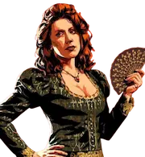
Dutch’s lover who feels increasingly neglected.
Character Profile
Role: Camp Member
Age (1899): About 24–28
Death Year: 1899
- Relationship with Dutch collapses.
Simon Pearson
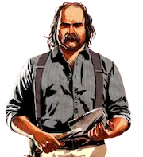
The camp cook and former sailor who provides supplies.
Character Profile
Role: Camp Member
Age (1899): About 48
Death Year: Unknown
Kieran Duffy
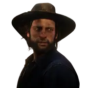
A nervous former O’Driscoll who joins the gang.
Character Profile
Role: Camp Member
Age (1899): About 26
Death Year: 1899
- Kind-hearted but anxious.
Rivals / Others
Colm O'Driscoll
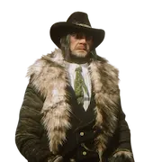
Leader of the rival O’Driscoll gang and enemy of Dutch.
Character Profile
Role: Rival Leader
Age (1899): About 45
Death Year: 1899
- Long-time enemy of Dutch.
Agent Milton
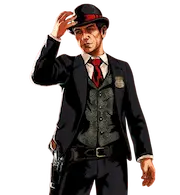
A Pinkerton agent who relentlessly hunts the gang.
Character Profile
Role: Pinkerton Agent
Age (1899): About 40–50
Death Year: 1899
Agent Ross
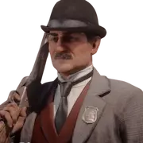
Another Pinkerton agent involved in the gang’s downfall.
Character Profile
Role: Pinkerton Agent
Age (1899): About 35–45
Death Year: 1914